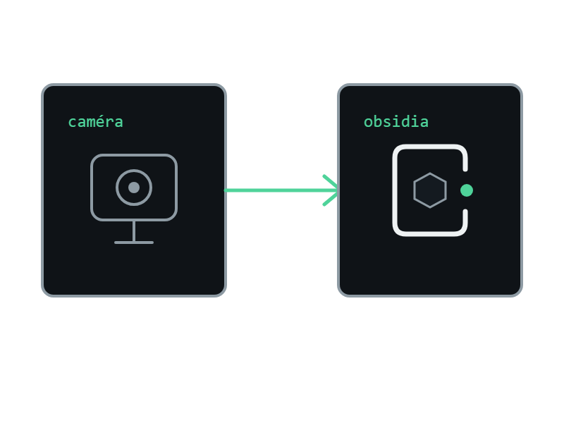

01Brancher
On branche le nouvel objet sur Obsidia au lieu de la box. Il fonctionne normalement, mais il est isolé du reste de la maison.
Un boîtier qui met en quarantaine vos objets et qui trace leur communication.
On ne change rien à son installation : Obsidia se place juste entre l'objet et le réseau, le temps de l'observer.

01On branche le nouvel objet sur Obsidia au lieu de la box. Il fonctionne normalement, mais il est isolé du reste de la maison.
 02
02
Pendant 72 h, Obsidia note à qui l'objet parle, dans quels pays se trouvent les serveurs et combien de données partent.
 03
03
À la fin, un rapport en français et un verdict : l'objet peut entrer sur le réseau, ou non.